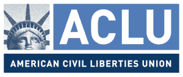
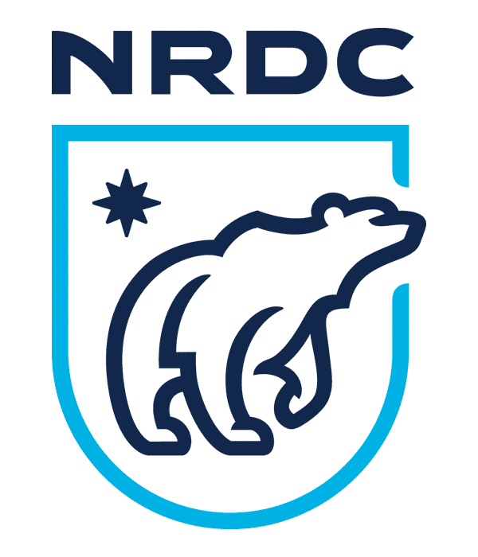
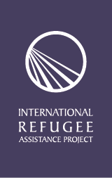
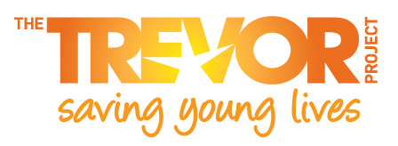
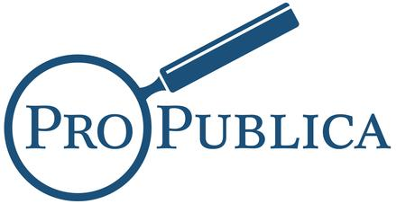

Organizations your money will go to

American Civil Liberties Union (ACLU)
The American Civil Liberties Union (ACLU) is a national organization that works daily in courts, legislatures and communities to defend the individual rights and liberties guaranteed by the Constitution and laws of the United States.
Planned Parenthood
Planned Parenthood is one of the nation's leading providers of high-quality, affordable health care for women, men, and young people, and the nation's largest provider of sex education. It also works with partner organizations to improve the sexual health and well-being of individuals and families everywhere.

Natural Resources Defense Council
The Natural Resources Defense Council works to safeguard the earth - its people, its plants and animals, and the natural systems on which all life depends.

The International Refugee Assistance Project (IRAP)
The International Refugee Assistance Project (IRAP) organizes law students and lawyers to develop and enforce a set of legal and human rights for refugees and displaced persons.
NAACP Legal Defense Fund (LDF)
LDF seeks structural changes to expand democracy, eliminate disparities, and achieve racial justice in a society that fulfills the promise of equality for all Americans.

The Trevor Project
The Trevor Project saves young lives through its free and confidential Lifeline, in-school workshops, educational materials, online resources, and advocacy.
Mexican American Legal Defense and Educational Fund (MALDEF)
MALDEF is a national nonprofit organization whose principal objective is to protect and promote the civil rights of the more than 27 million Latinos living in the United States.

Pro Publica
ProPublica is an independent, non-profit newsroom that produces investigative journalism in the public interest. In 2010 it became the first online news source to win a Pulitzer Prize.
National Immigration Law Center (NILC)
National Immigration Law Center’s mission is to defend and advance the rights and opportunities of low-income immigrants and their family members.

Council on American-Islamic Relations (CAIR)
CAIR is a Muslim civil rights and advocacy group. Through media relations, civic engagement, and education, CAIR promotes Islamic perspectives to the American public and promotes social and political activism among Muslims in America.
Convinced? Make a pledge to donate monthly
It's just a pledge for now, we'll let you know once we launch and ready to accept donations.